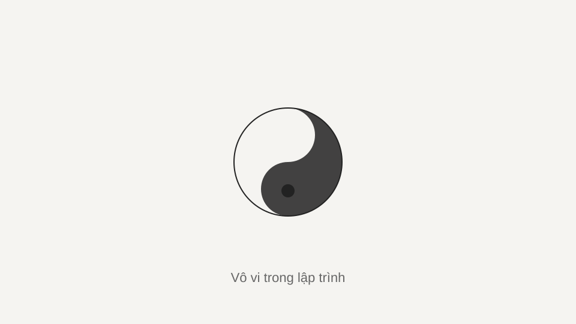
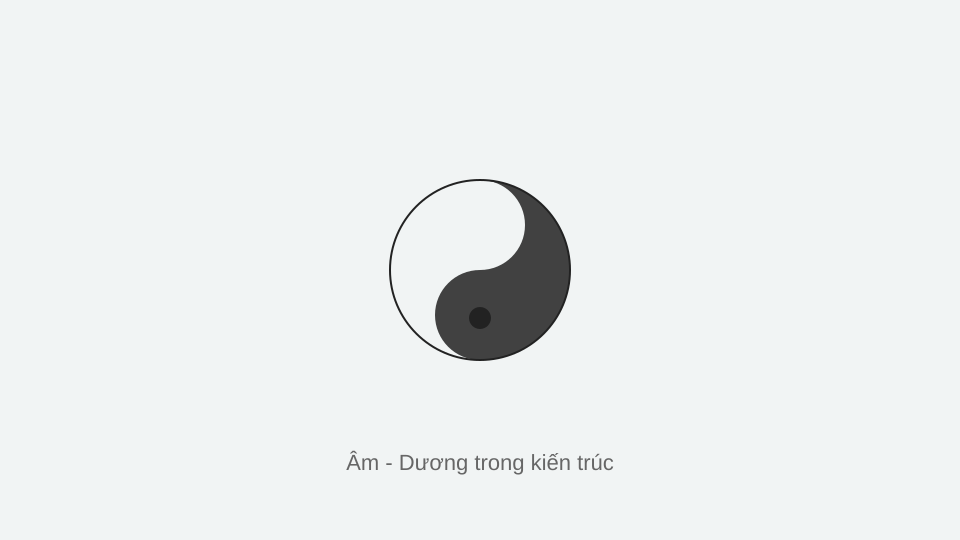
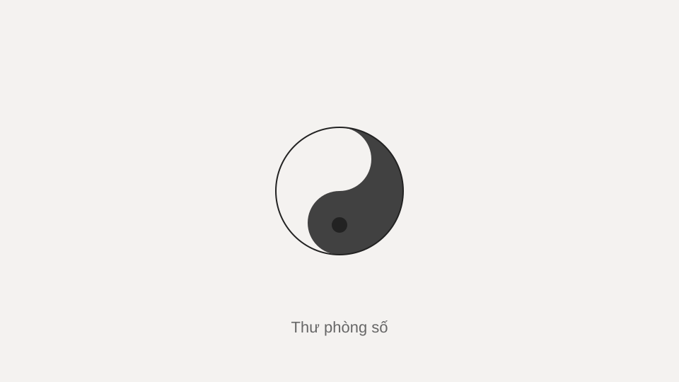

Blog
Toàn bộ bài viết — về lập trình, kiến trúc phần mềm và triết học kỹ thuật.
-

Vô vi trong lập trình: viết ít hơn, đúng hơn
Tư tưởng "vô vi" của Đạo giáo — không cưỡng cầu, thuận theo tự nhiên — có thể trở thành một nguyên lý thiết kế phần mềm: giảm trạng thái dư thừa, để hệ thống vận hành theo quy luật của chính nó.
-

Âm - Dương trong kiến trúc hệ thống
Đồng bộ và bất đồng bộ, đọc và ghi, tĩnh và động — mọi hệ thống lớn đều là một cuộc cân bằng giữa hai cực đối lập nhưng bổ sung cho nhau.
-

Thư phòng số: vì sao tôi tự lưu giữ tri thức của mình
Một nơi lưu trữ những gì đã học, đã làm, đã sai — không phụ thuộc vào bất kỳ nền tảng nào khác ngoài chính mình.